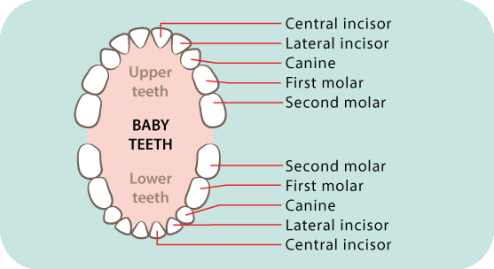
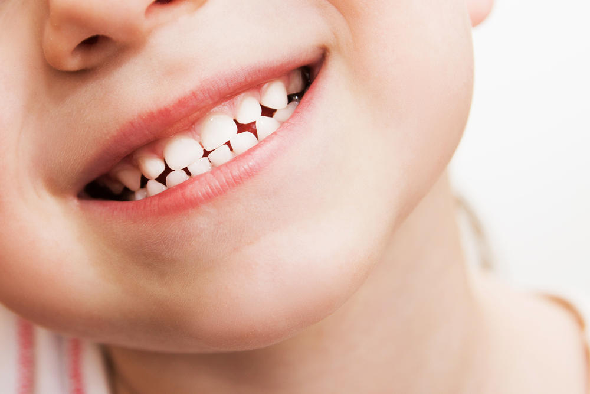

WHY ARE BABY TEETH SO IMPORTANT?
why do baby teeth matter?
Baby teeth or “milk teeth” play a vital role in a child’s physical, emotional, and social development for many reasons.
Unfortunately, many parents are under the impression that since they fall out eventually, it’s not crucial to take care
of baby teeth.
Here are a few reasons why baby teeth are actually very important for your child:
- Overall Health and Nutrition: teeth are essential for chewing;
unhealthy decayed teeth can cause nutritional deficiency. Untreated carious teeth
can lead to severe infection that can spread rapidly to other areas of the body such as
brain and neck at which time hospitalization is needed.
-
Alignment and Position of Permanent Teeth: Baby teeth are space savers that hold space
and guide the adult teeth in its proper position. If baby teeth are lost prematurely, adjacent
teeth can drift in the open space and create inadequate space for the eruption of adult teeth, which
leads to crowding or impaction.
-
Stimulating Normal Development of The Facial Bones And Muscles: Also partly responsible for the development
of healthy adult teeth, the permanent tooth bud is in close proximity to the baby teeth. If the carious baby teeth
are left untreated, the decay spreads quickly in the form of infection toward the developing adult tooth hindering
its development and causing permanent damage
-
Speech Development: The presence and positioning of baby teeth help in the formation of correct pronunciation.
-
Self Esteem:Decayed or missing teeth can cause a lack of confidence and social interaction.

How to Practice Good Oral Health for Your Children
Be Bullish on Brushing; make brushing fun, not a battle! Here are some ways to help your child maintain good oral health:
- Brush together. Routine oral care habit makes an impact as kids get older, they choose to implement
the habits learned from parents and caregivers.
-
Start early. Infants’ dental ridges and tongue need to be wiped frequently with moist gauze pad or washcloth.
-
Once teeth start to erupt, use age-appropriate toothbrushes and toothpaste and follow the rule of two:
brush twice daily for two minutes, followed by flossing.
-
Remember, children under three just need a rice grain size of fluoride toothpaste and pea size for children between ages 3-6.
